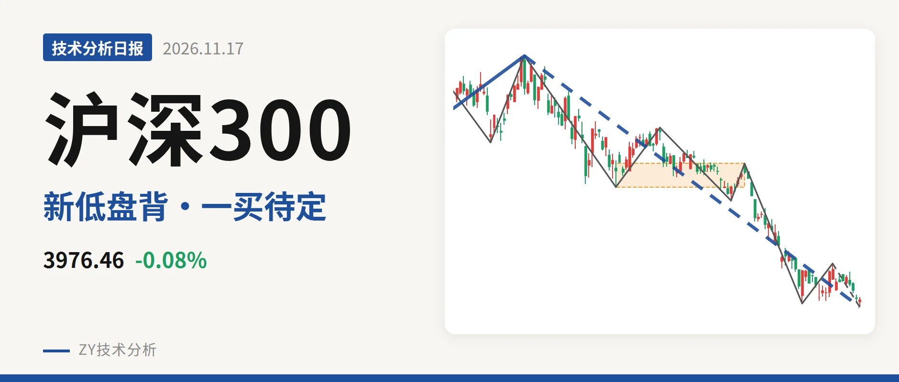
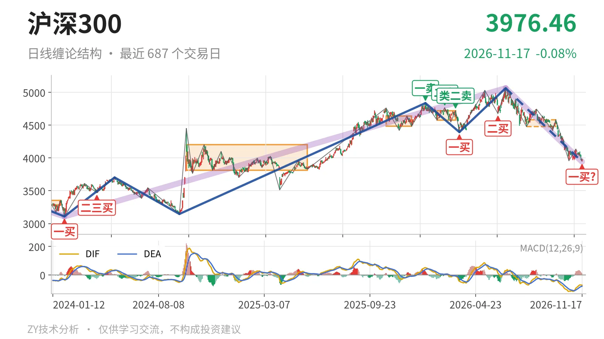

沪深300｜新低3942.38点现盘背，一买待定

最近日线中枢 4478.21—4583.38点，收盘位于中枢之下
一句话：日线下跌还在延续，3942.38暂定一买，反抽看4478点一线。
📉 走势结构：日线下跌线段未结束
6月23日以来的日线下跌线段还在延续，没有出现线段级结束信号。该线段从5064.27点跌至3942.38点，跌幅约22.2%，内含7个日线笔。更大级别看，2024年2月2日至2026年6月23日的上涨走势未被完全破坏，但当前处于上涨后的回调段；2021年2月18日至2024年2月2日的下跌段早已结束。

📍 中枢与位置：跌破最近中枢下沿
最新收盘3976.46点已跌破最近日线笔中枢下沿。该中枢为7月30日至9月22日形成，区间4478.21—4583.38点，价格低于下沿约11.2%。该中枢尚未完成，当前价格远离下沿，中枢有下移特征。前一个2024年10月8日至2025年5月30日中枢（3812.32—4200.91点）仍在承接当前价，但最近中枢中轴已经从4650点附近下移至4531点附近。
🔻 买卖点：11月17日一买暂定
11月17日3942.38点只是暂定的一买（盘整背驰）。所在下跌笔11月5日至11月17日还没结束，这个一买会随这一笔的延续而变化。此前3月24日一买4394.29点和6月8日二买4677.57点均已被跌破，只对应日线笔级别反抽，未能终结6月23日以来的下跌线段。1月13日一卖4836.95点、2月25日二卖4766.56点、3月17日类二卖4720.86点，一个比一个低，但6月23日创出5064.27点新高后，这些卖点也只是笔级别顶部。线段级别买点尚未出现。

📊 背驰：新低不新弱
当前出现“新低不新弱”的盘整背驰。9月22日至10月23日下跌笔从4583.38点跌至3958.14点，绿柱面积494，DIF低点-115.1；11月5日至11月17日下跌笔从4136.80点跌至3942.38点，价格创出新低，但绿柱面积接近0，DIF低点-92.5，明显抬高。价格新低、DIF未新低、绿柱面积急剧缩小，构成盘整背驰。不过11月5日以来的下跌笔还在延续，该背驰暂以当前仍在延续的笔为准。
🧭 关键位置观察：反抽看4478点一线
结构上当前偏弱，弱在价格位于最近中枢下方，且日线下跌线段未结束。反抽若回不到4478点上方，即无法回到7月30日至9月22日中枢，结构上构成日线三卖。重新站上4478点，则下跌更可能只是中枢扩展，价格回到4478—4583点区间震荡。下方观察3812点附近，这是2024年10月8日至2025年5月30日中枢下沿，若跌破，调整级别会进一步扩大。当前暂定一买出现，但反抽若不能站稳4478点，仍以弱势结构对待。
⚠️ 本文为基于公开行情数据的缠论技术结构记录，由程序自动计算并生成，仅供学习交流，不构成任何投资建议。市场有风险，投资需谨慎。